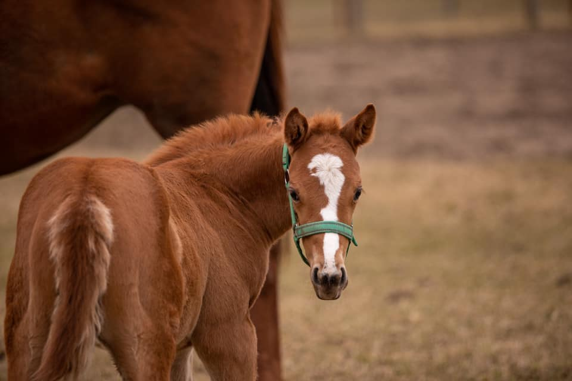

KNOCKTURN ALLEY
(Balios - Key To Life/Country Club)
Klacz rasy Koń Pełnej Krwi Angielskiej, urodzona 5 lutego 2021r. w Stadninie Pegaz w Nowej Wronie. Wyhodowana przez Sandrę Wiśniewską.
Knockturn Alley jest po irlandzkim ogierze Balios, hodowli Sheikh Sultan Bin Khalifa Al Nahyan i od polskiej klaczy Key To Life, hodowli Expert Host - Janusz Romanowski.
